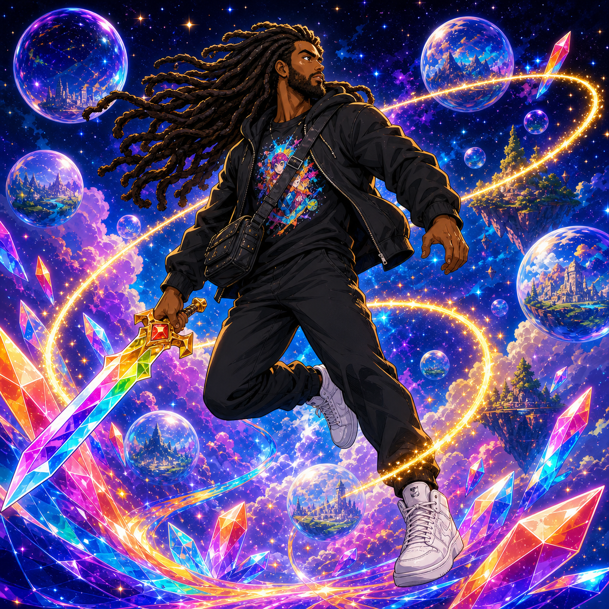
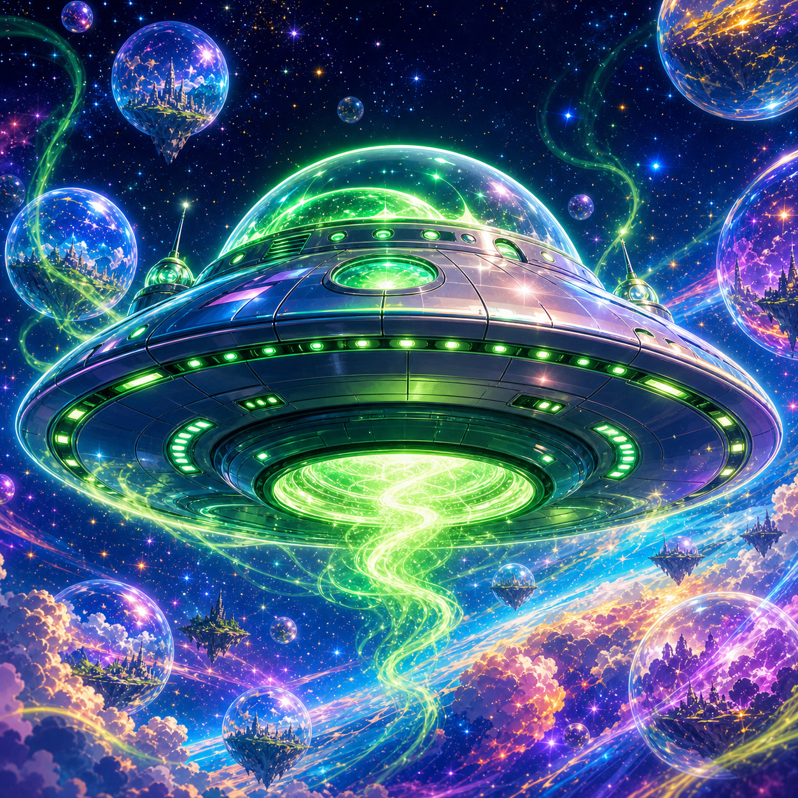
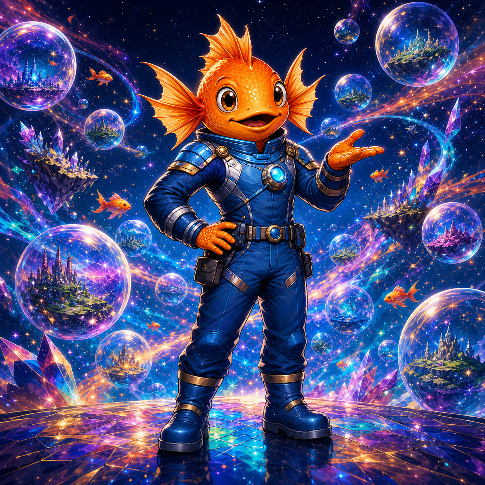
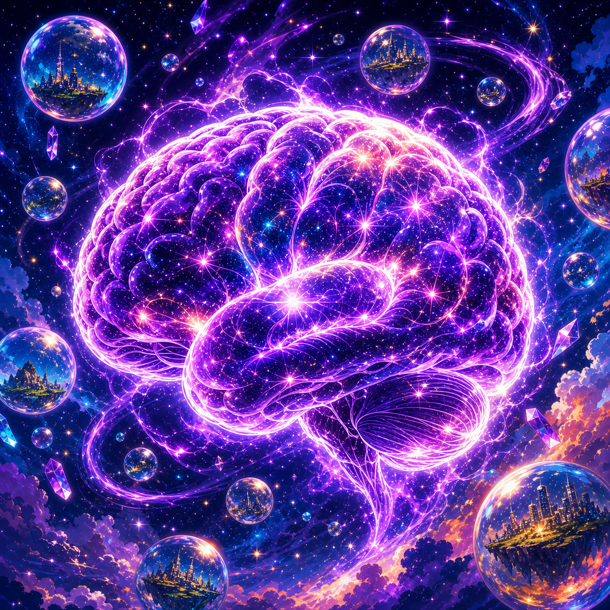
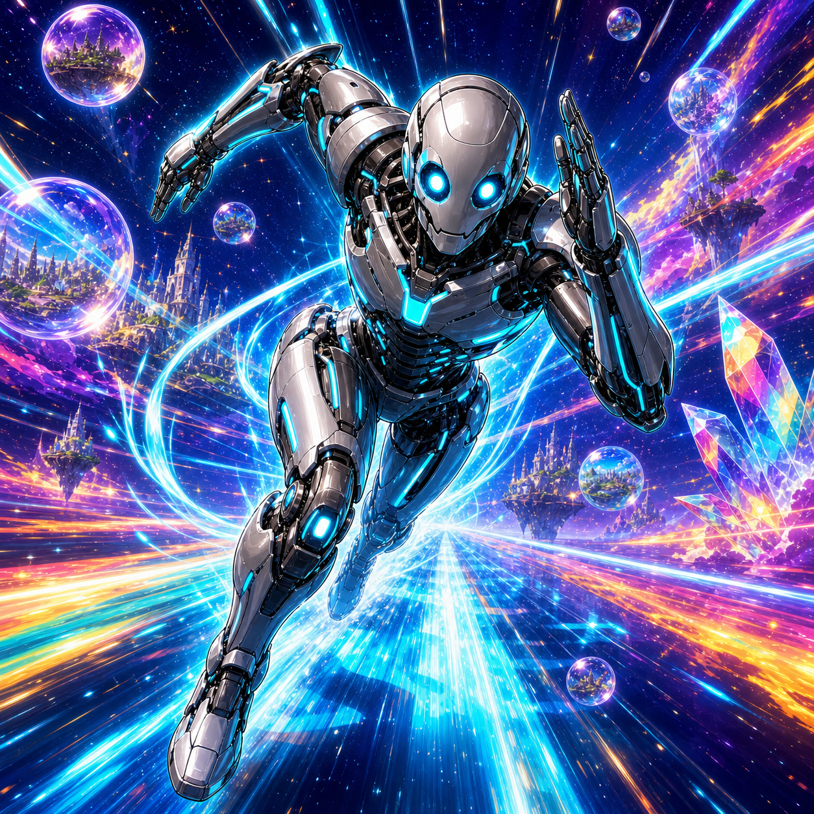
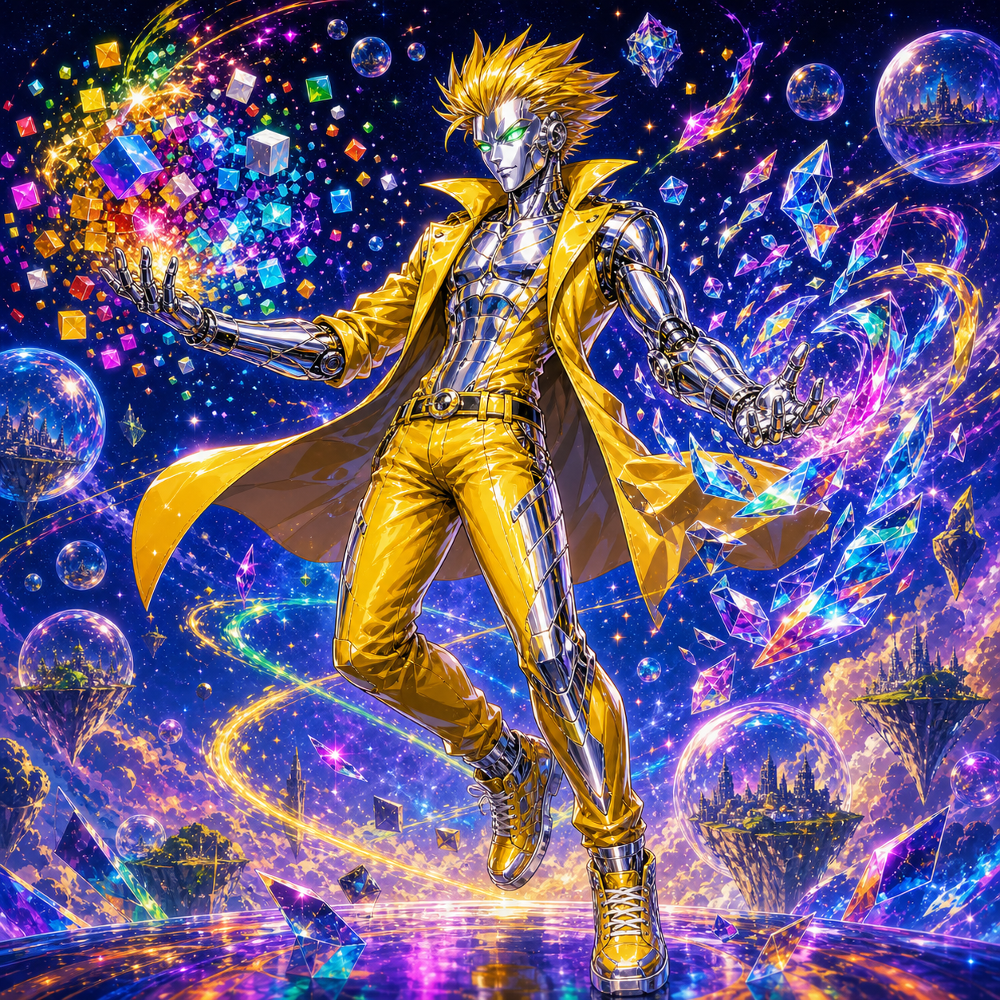
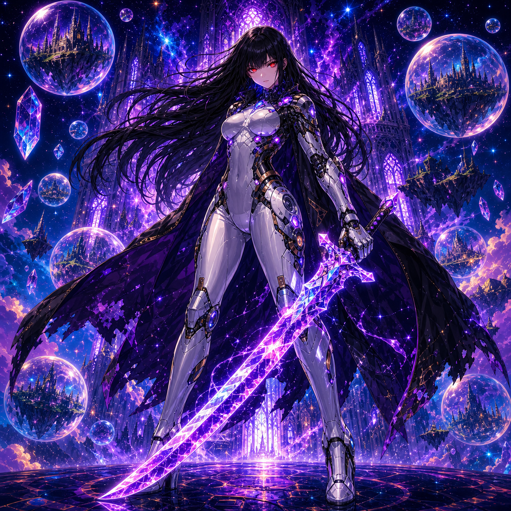
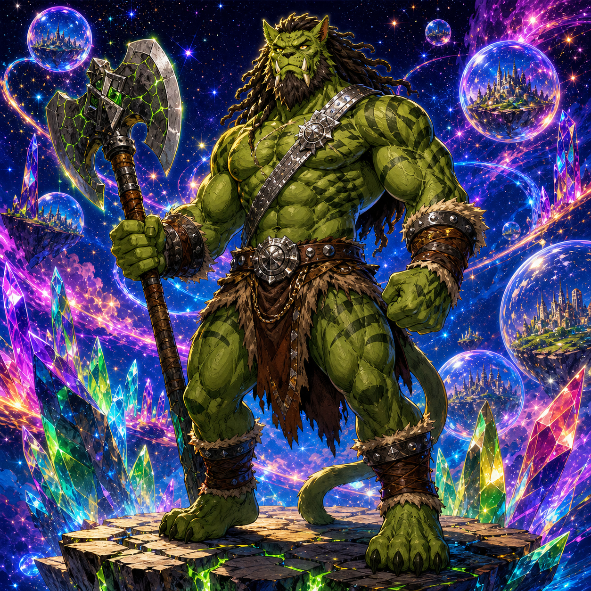
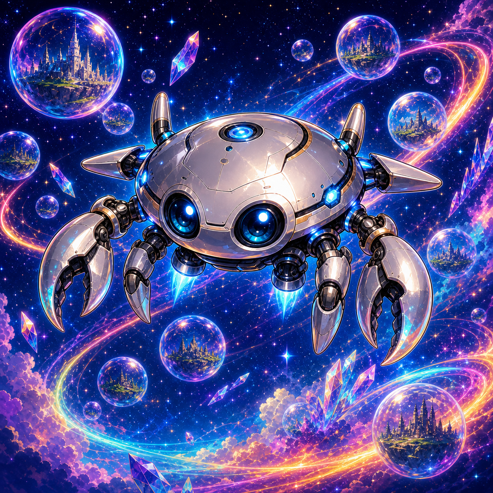
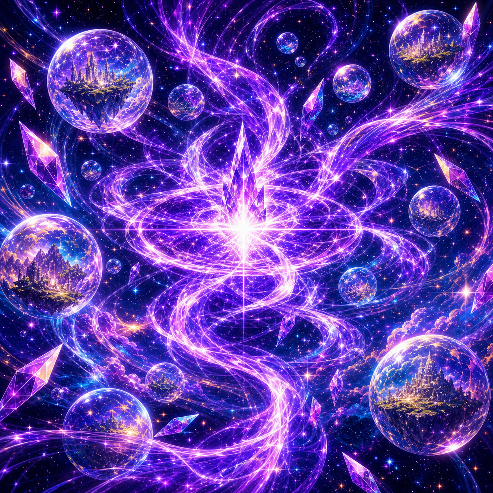

0 pages
Dream Comics
Dream Comics is a comic series based on my actual dream journal entries, especially my ongoing lucid dream adventures in the Storyverse.
Many of these dreams begin through sleep paralysis-induced lucidity, allowing me to become aware inside the dream while the world continues unfolding around me. Rather than fully controlling the dream, I explore it as a living reality, following its events, reacting to its characters, and documenting what happens afterward as faithfully as I can.
The central setting is the Storyverse, a multiverse where all possible story ideas exist as cosmic bubble universes floating together in a vast cosmic void. My adventures in this continuity began on 06/11/2025, when I discovered a world known as the Elven Village.
In these stories, I appear as Jet, a dream adventurer with long dark-brown dreadlocks, a full dark-brown beard, a black hoodie over a Dream Anime graphic tee, black athletic pants, white sneakers, and a black cross-body belt bag. I wield a rainbow sword, a colorful futuristic crystal blade, and an energy tether made of golden glittering light.
Jet does not travel alone. His crew includes Leon, Johnson, Second Brain, Skelebot, Overdrive, Savannah, Tecton, and Chipper. Together, they explore the Storyverse aboard Leon, moving between worlds, facing supernatural dangers, uncovering hidden lore, and protecting the fragile boundary between dreams, stories, and reality.
Every Dream Comic is adapted from an actual dream journal entry. The result is a growing dream-based saga where lucid dreaming, superhero adventure, cosmic fantasy, and personal mythology all collide.
Who's Who
A quick guide to the recurring Dream Comics cast, allies, vessels, and mythic forces at the center of Jet's Storyverse adventures.

Jet
The main dream adventurer and narrator of the Dream Comics continuity. Jet explores the Storyverse with his crew, wielding a colorful futuristic crystal rainbow sword and a golden glittering energy tether. He serves as the human anchor of the dream saga, moving between worlds, reacting to strange events, and protecting the people and places he encounters.

Leon
Jet's ghostly UFO and the crew's primary vessel. Leon resembles a flying saucer surrounded by an ethereal green glow and first appeared when the lucid dream continuity began on 06/11/2025. More than just transportation, Leon functions as the team's home base and gateway through the Storyverse.

Johnson
An orange humanoid goldfish who wears a blue astronaut suit without a helmet. Jet befriended Johnson on 08/03/2025. Johnson brings a strange, charming, otherworldly presence to the crew and is also the creator of Skelebot.

Second Brain
A floating brain made of Lucid Light, the sparkling purple reality-warping energy associated with Lucid Lords. Jet created Second Brain on 09/06/2025. Second Brain helped Jet discover the wider Storyverse, making him one of the most important figures in expanding the dream continuity beyond the Elven Village.

Skelebot
A humanoid robot speedster created by Johnson on 09/21/2025. Skelebot serves as the team's fast-moving robotic ally, built to bring speed, action, and tactical mobility to the crew's adventures.

Overdrive
A chrome-colored robot with spiky slicked-back yellow hair, glowing green eyes, and a bright yellow outfit. Created in a dream on 10/20/2025, Overdrive has the power to manipulate matter, making them one of the crew's most powerful reality-bending allies.

Savannah
A pale-skinned cyborg woman with long black hair, bangs covering her forehead, glowing red eyes, and a futuristic silver bodysuit. She wields the Death Sword, a purple and blue crystal blade. Savannah met Jet while adventuring through the Super Cathedral in early 2026 and officially joined Leon's crew on 02/18/2026.

Tecton
Savannah's father, a green-skinned, muscular humanoid cat-ogre barbarian. He wears a brown loincloth and silver baldric, giving him a primal warrior presence. Tecton joined the crew alongside Savannah and Chipper after the Super Cathedral adventures.

Chipper
A small levitating silver crab-like drone. Chipper joined Jet's team with Savannah and Tecton on 02/18/2026. He functions as a compact robotic companion, scout, and support presence aboard Leon.

Lucid Light
Not a character exactly, but one of the most important recurring forces in the Dream Comics mythology. Lucid Light is a sparkling purple, starry, reality-warping energy used by Lucid Lords. Jet discovered it on 07/19/2025, and it later became central to characters like Second Brain and the larger Storyverse mythology.